12 31 ... Replacing Alternator Belt Pulley
12 31 ... Replacing Alternator Belt Pulley
Special tools required:

Necessary preliminary tasks:
- Remove drive belt.
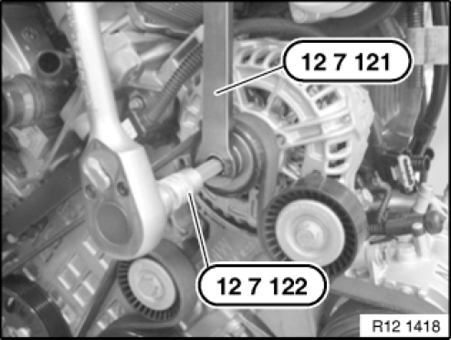
Procedure with special tool 12 7 121.
Illustration shows N42:
If fitted, remove protective cap from belt pulley.
Depending on the alternator version, hold
down alternator axis with:
- Torx key
- Hold inner multi-wrench tool (special tool 12 7 122).
Release freewheel with special tool 12 7 121 and remove.
Installation note:
Tightening torque 12 31 8AZ.
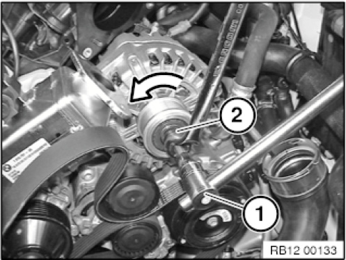
Procedure with special tool 12 7 123.
Depending on the alternator version, hold down alternator axis with:
- Torx key
- Hold inner multi-wrench tool (special tool 12 7 122).
Release freewheel with special tool
12 7 123 and a ring spanner and remove.
Installation note:
Tightening torque 12 31 8AZ.
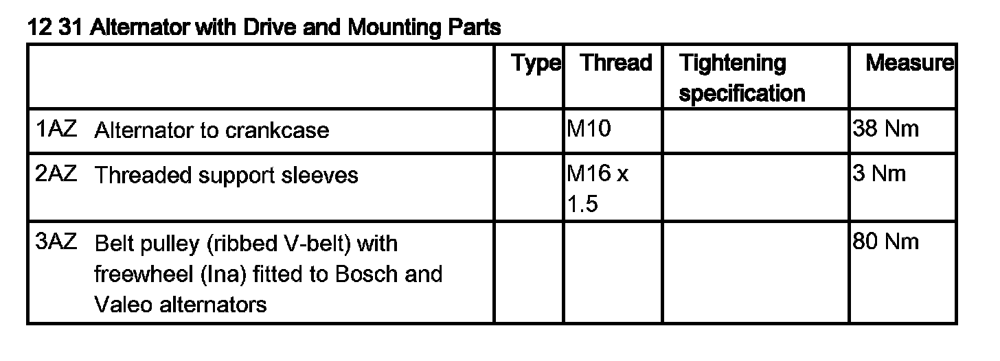
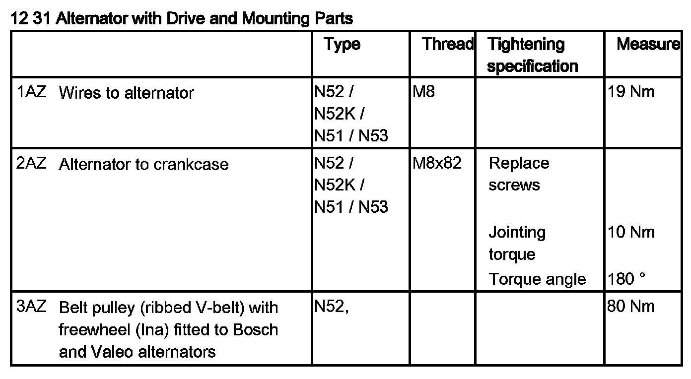
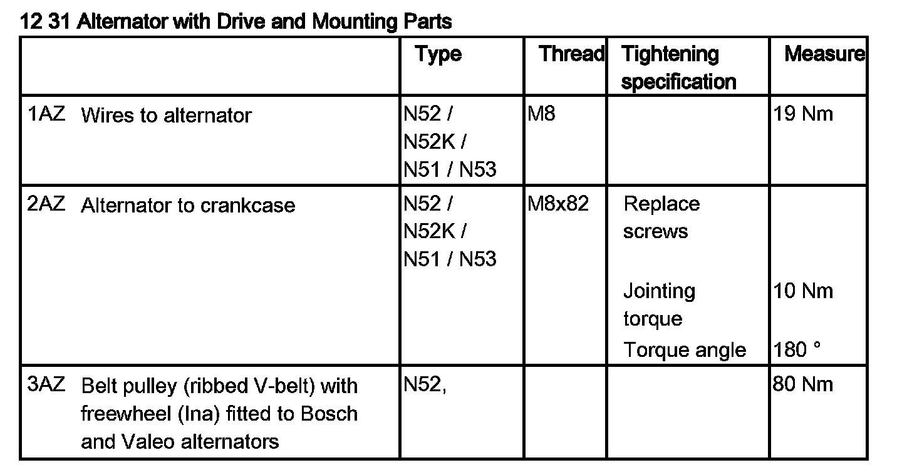
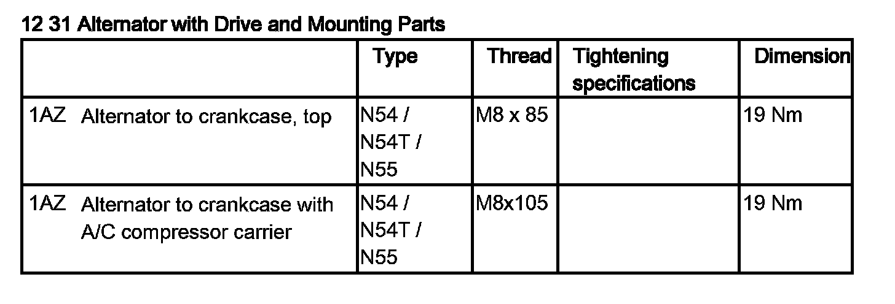
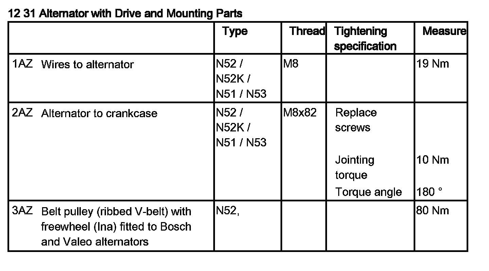
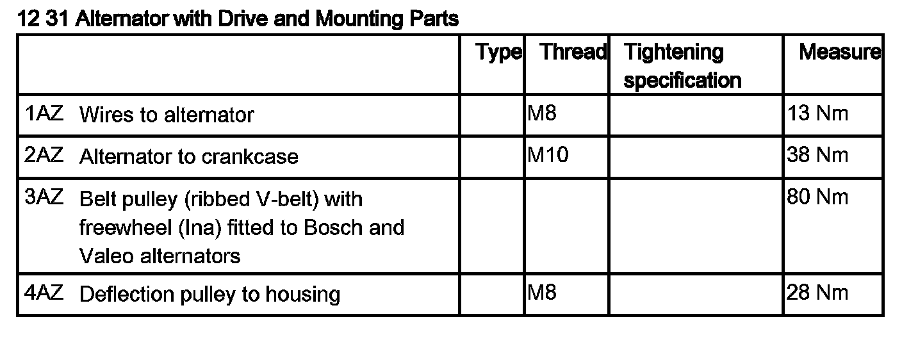
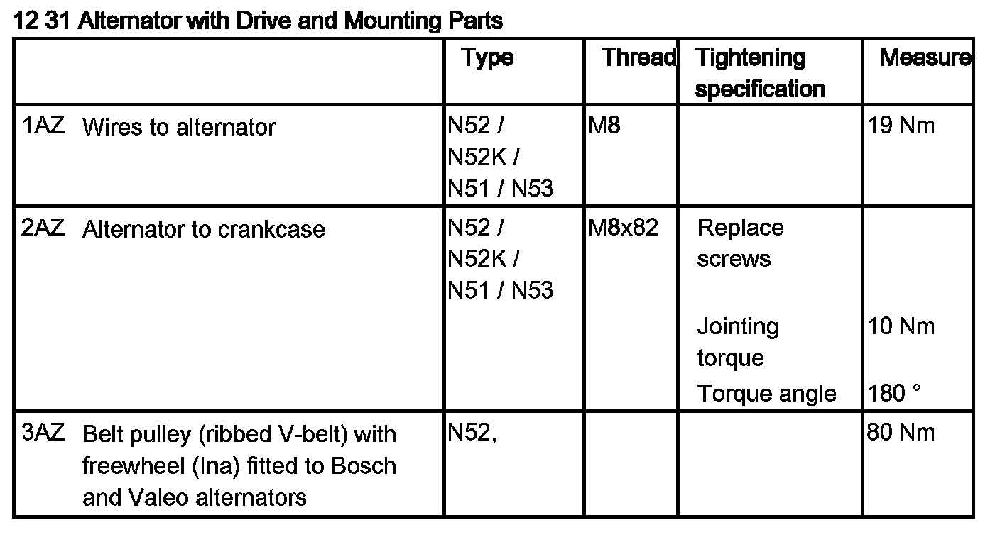
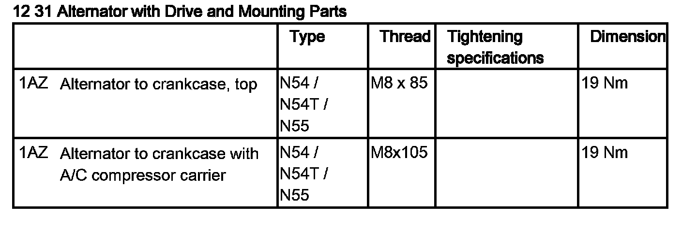
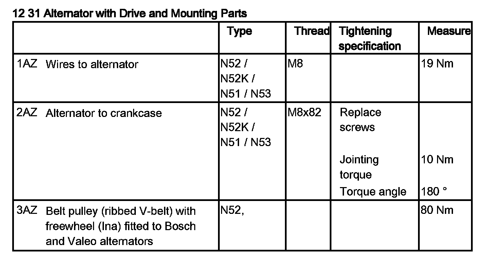
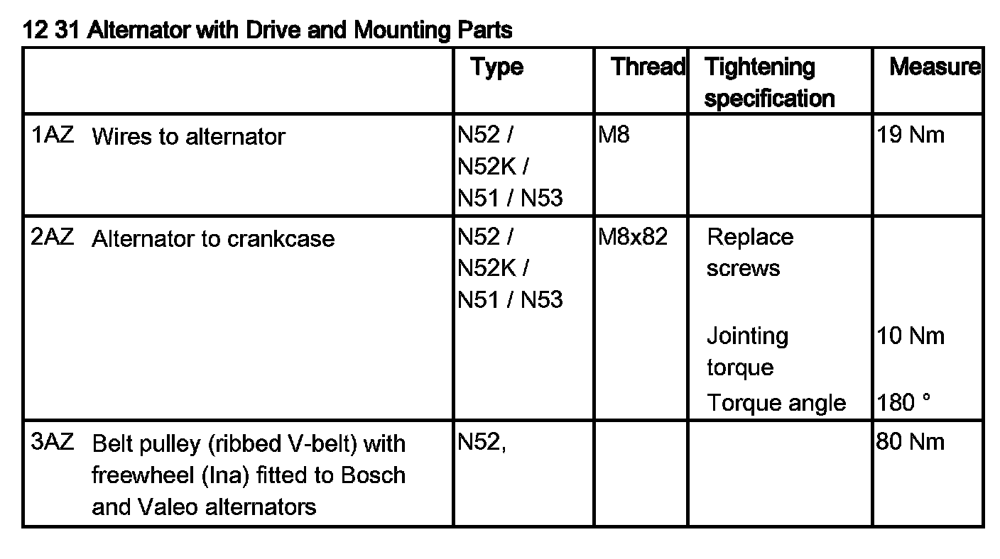
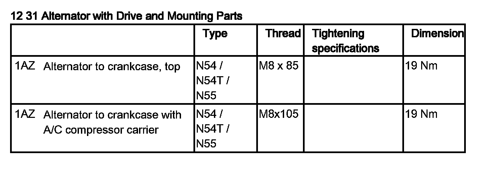
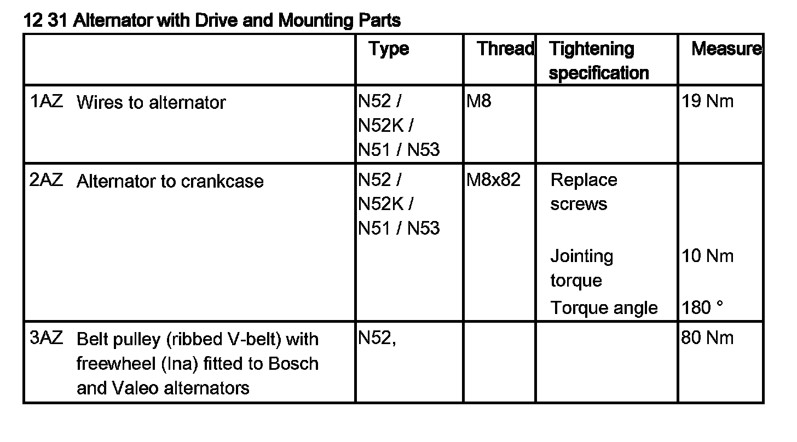
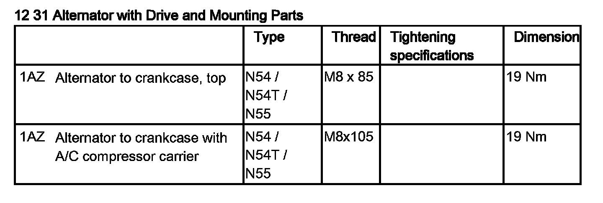